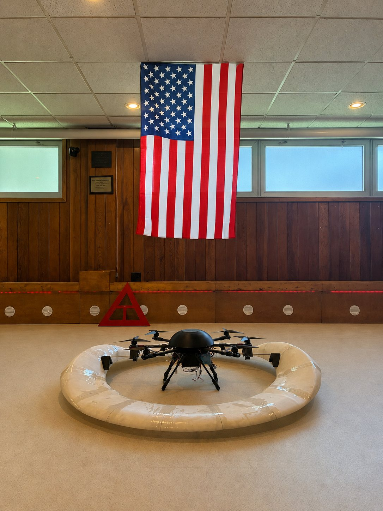
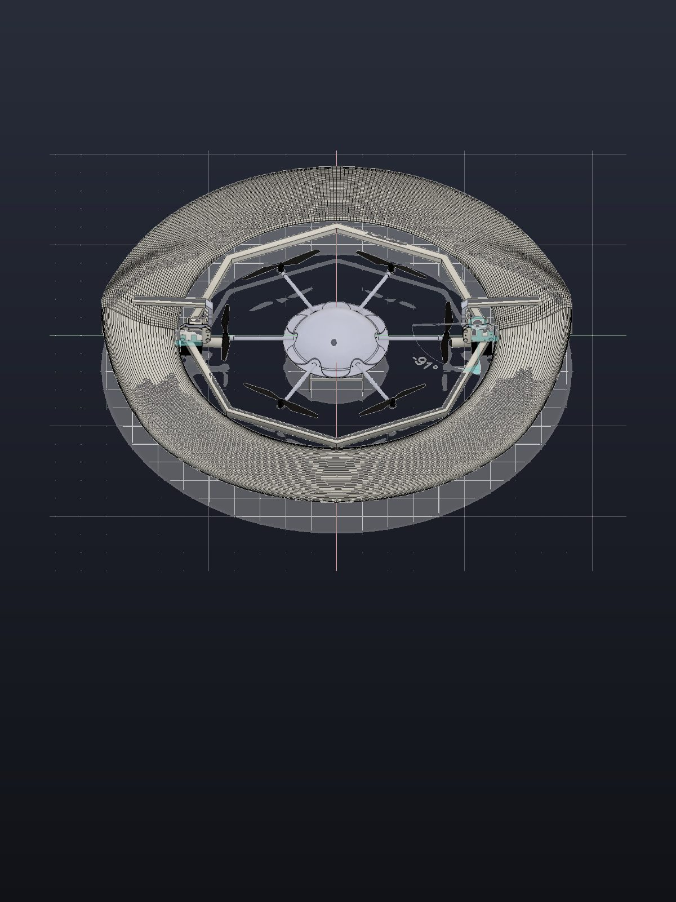

At ASTRO Systems we build heavy-lift drones from consumer hardware and 3D-printed parts. Cheap iteration means we are able to bench test at the speed of our engineering, unrestricted by a slowing supply chain. When something breaks, we print the replacement and fly it again.
Astra is our solution to the heavy-lift problem. Built around the people who have to deploy it, the platform asks for nothing a field team cannot carry, print, or replace.
Astra is our heavy-lift drone platform, built around a specially optimized circular wing that generates passive lift in forward flight. Because nearly the whole airframe contributes to lift, Astra is able to carry more for longer on the same battery.


